Всего записей: 175
-
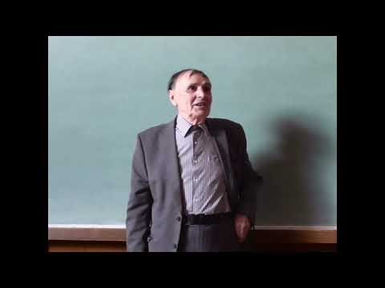
№ 0012:04:24А.А. Зализняк. Коротко об арабском языке
-
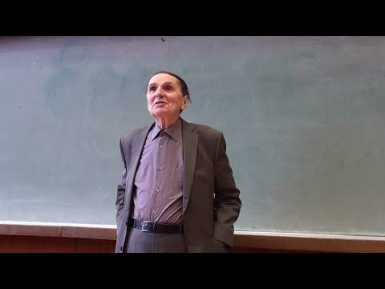
№ 0021:32:52А.А. Зализняк. Эпизод из истории русского ударения
-
 № 0031:42:14
№ 0031:42:14А.А. Зализняк. Контуры истории русского ударения
-
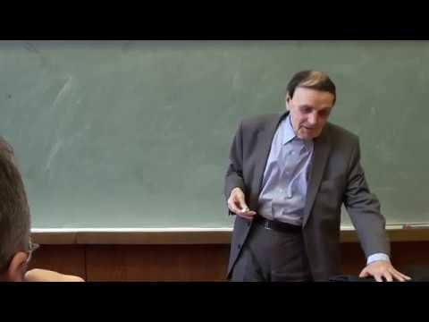
№ 0042:04:46А.А. Зализняк. Как изменяется внешняя сторона слова
-
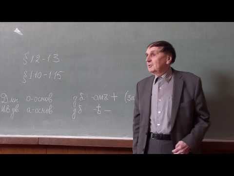
№ 0052:19:00А.А. Зализняк. Новгородские берестяные грамоты
-
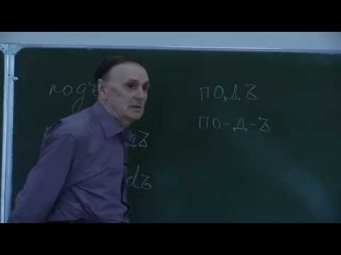
№ 0062:07:48Зализняк. Контуры истории русского языка. 2012
-
№ 0071:28:23
Зализняк. О Велесовой книге. 2008
-
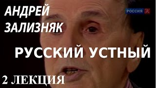
№ 00843:58ACADEMIA. Андрей Зализняк. Русский устный. 2 лекция. Канал Культура
-
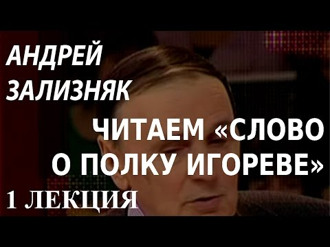
№ 00939:22ACADEMIA. Андрей Зализняк. Читаем «Слово о полку Игореве». 1 лекция. Канал Культура
-
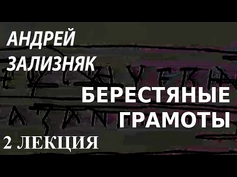
№ 01043:47ACADEMIA. Андрей Зализняк. Берестяные грамоты. 2 лекция. Канал Культура
-
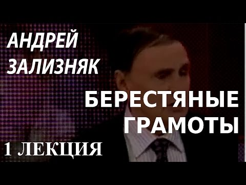
№ 01143:54ACADEMIA. Андрей Зализняк. Берестяные грамоты. 1 лекция. Канал Культура
-
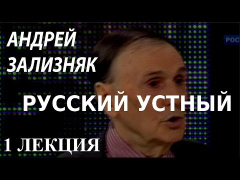
№ 01243:58ACADEMIA. Андрей Зализняк. Русский устный. 1 лекция. Канал Культура
-
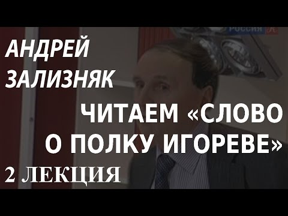
№ 01340:47ACADEMIA. Андрей Зализняк. Читаем «Слово о полку Игореве». 2 лекция. Канал Культура
-
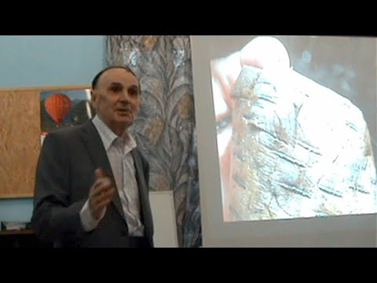
№ 01425:41Зализняк. О прошлом и будущем русского языка (Очевидное-невероятное, 2009)
-
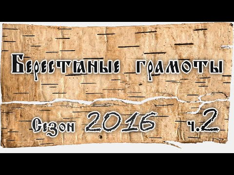
№ 01538:53Яндекс Гугл и алгоритм Зализняка Острова Телеканал Культура
-
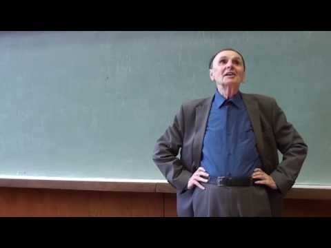
№ 0161:13:56А. А. Зализняк Строй ведийского языка Лекция 1 12092015
-
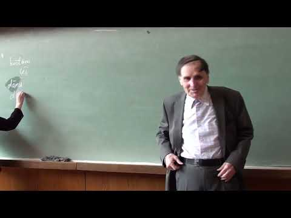
№ 0171:04:12Андрей Зализняк Интереснейшая история русского языка
-
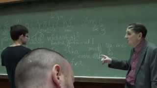
№ 0181:04:12Андрей Зализняк. История русского языка
-
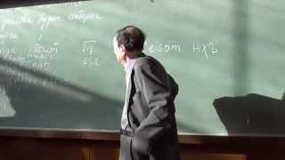
№ 01926:16Фильм о А.А.Зализняке «Коэффициент достоверности», 2019
-
 № 02054:48
№ 02054:48Зализняк о древнейшей грамоте и о Новгородском кодексе (цере). 04.08.2000
-
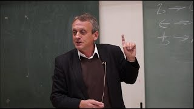
№ 0212:35:14Об Очерке, академике Зализняке и санскрите (презентация книги)
-
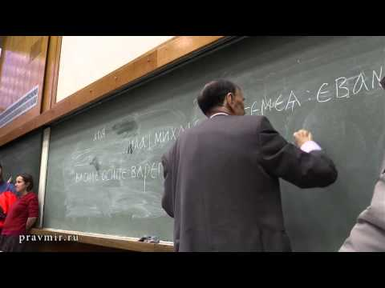
№ 02247:53Язык берестяных грамот (рассказывает лингвист Андрей Зализняк)
-
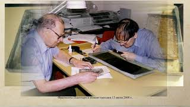
№ 0232:34:48Новые открытия академика Зализняка в 2017 году
-
 № 0241:47:11
№ 0241:47:11Andrey Zaliznyak presents a book, 24 Dec 2015
-
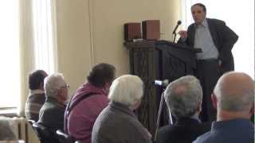
№ 02555:12Наблюдатель. Елена Рыбина, Андрей Зализняк, Пётр Гайдуков и Савва Михеев. Эфир от 27.10.2015
-
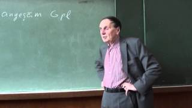
№ 0262:18:13А.А.Зализняк читает лекцию о берестяных грамотах студентам-историкам, 08.08.2017
-
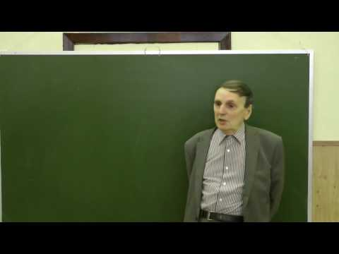
№ 0271:49:09Зализняк. О ложной лингвистике и квазиистории. 2011
-
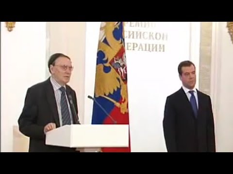
№ 02824:34Зализняк. О псевдознаниях и лженауке. Угол зрения, 2011
-
№ 02956:17
Истина существует. Жизнь Андрея Зализняка в рассказах ее участников
-
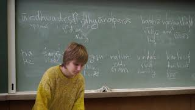
№ 03054:35Наблюдатель. Андрей Зализняк. Воспоминания жизни. Эфир 30.09.2019
-
№ 03143:59
Фильм «Андрей Зализняк. Лингвистический детектив». 2019
-
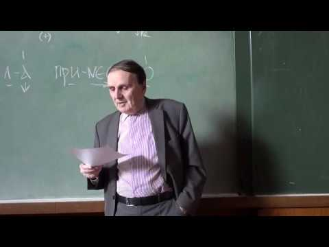
№ 0321:52:11А.А. Зализняк. О происхождении слов
-
№ 0332:11:34
Зализняк. Механизмы экспрессивности в языке. 2011
-
№ 0342:34:48
Зализняк. О берестяных грамотах из раскопок 2017 года
-
№ 0352:03:56
Зализняк. Что такое любительская лингвистика. 2010
-
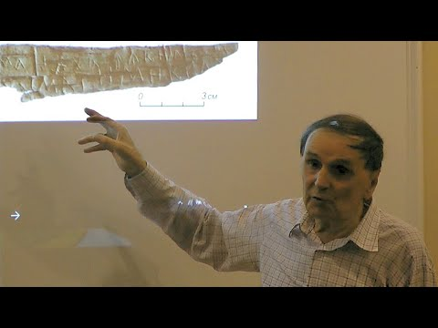
№ 0362:12Русь - скандинавское слово. Ведущий русский лингвист современности - академик Зализняк
-
 № 0374:21
№ 0374:21Украина родина древних Укров! А.А. Зализняк
-
№ 0382:17:24
День рождения А. А. Зализняка. Видеоконференция, слайд-шоу. 29.04.2023
-
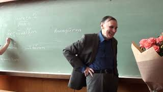
№ 0393:04:07А.А.Зализняк отвечает на вопросы В.А.Успенского. Часть II, 02.07.2010
-
№ 0402:19:00
Зализняк. Новгородские берестяные грамоты. 2007
-
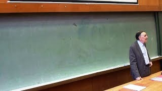
№ 0412:22А.А.Зализняк в 1964-67 годах, 2 минуты любительской киносъёмки
-
№ 04222:32
Венгрия 60-х годов глазами А. А. Зализняка
-
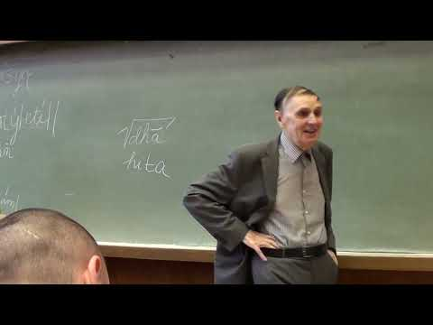
№ 0431:38А.А.Зализняк и другие участники новгородской экспедиции, 21.07.2010
-
№ 04455:22
Андрей Зализняк и Александр Ужанков_ Слово о полку Игореве
-
№ 0451:22:13
Андрей Зализняк О любительской лингвистике
-
 № 0461:29:54
№ 0461:29:54Зализняк. История русского ударения 16 10 29 семинар 08
-
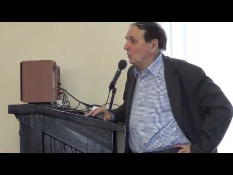
№ 0471:32:07Зализняк. История русского ударения 16 11 12 семинар 10
-
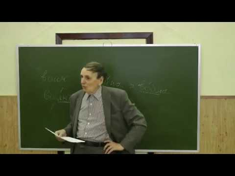
№ 0481:23:06Зализняк. О профессиональной и любительской лингвистике. 2008
-
№ 04912:32
Новгородский семинар. Юбилей А.А. Зализняка
-
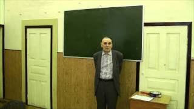
№ 0501:25Они узнали ее нездоровую..., фрагменты занятия А.А. Зализняка Строй санскрита (1 из 3)
-
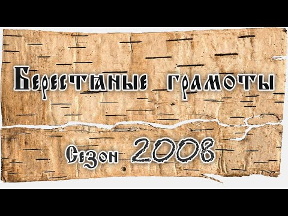
№ 0512:39Прощание с А.А.Зализняком. ТВ «Культура», 28.12.2017
-
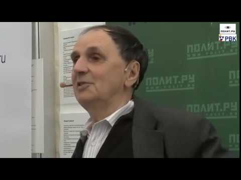
№ 0522:21Умер Андрей Зализняк
-
№ 0531:03
Университетская рецитация, фрагменты занятия А.А. Зализняка Строй санскрита (23)
-
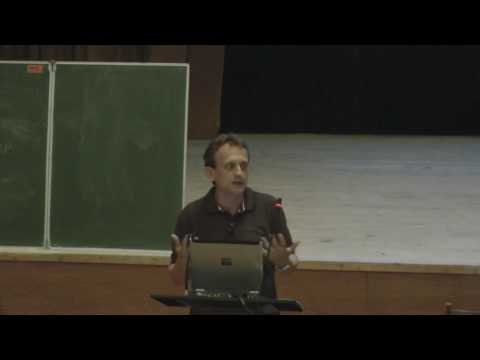
№ 0541:28:23Зализняк. История русского ударения. 06.05.2017. Семинар 26
-
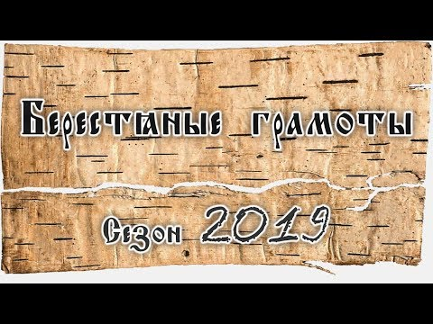
№ 0551:22:42Зализняк. История русского ударения. 19.11.2016
-
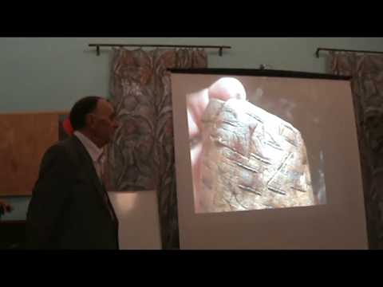
№ 0561:24:16Зализняк. История русского ударения. 26.11.2016 Семинар 12
-
 № 05739:28
№ 05739:2860-летие Е.В.Падучевой застолье, песни… 1995 год
-
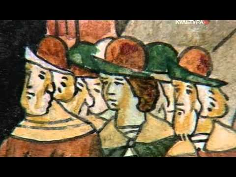
№ 0581:25:46Спецкурс А.А. Зализняка Строй ведийского языка, 2015 г.
-
 № 0591:28:46
№ 0591:28:46А. А. Зализняк Грамматический строй санскрита 2014 2015 гг Лекция 3 27092014
-
 № 0601:25:16
№ 0601:25:16А. А. Зализняк Грамматический строй санскрита Лекция 1 13 09 2014 МГУ
-
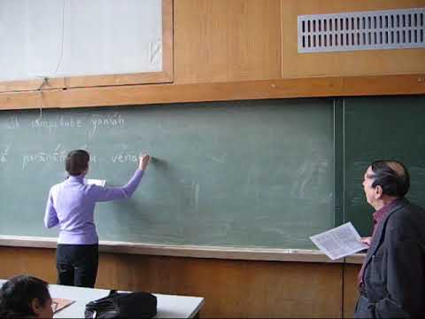
№ 0614:33А. А. Зализняк Из лекции 26 декабря 2011 г Разбор RV 10135
-
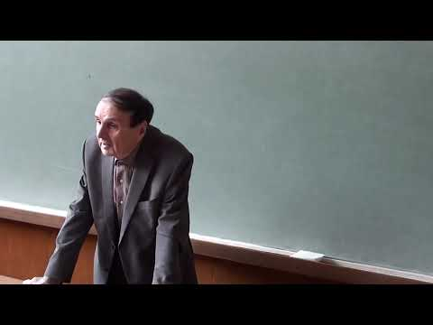
№ 0624:31А. А. Зализняк Из лекции 27 ноября 2010 г Разбор RV 1034
-
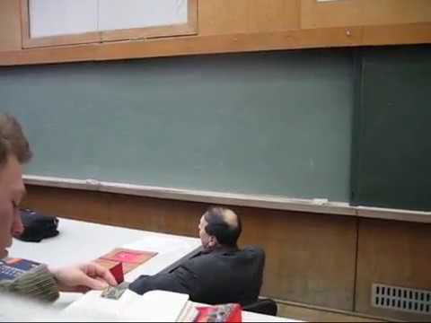
№ 0634:40А. А. Зализняк Из лекции 4 декабря 2010 г Разбор RV 1034
-
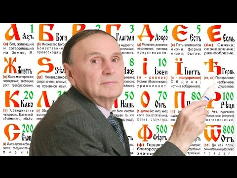
№ 0641:25:13А. А. Зализняк История русского ударения 2016 2017 гг Аудиозапись лекции 1 100916
-
 № 0651:22:45
№ 0651:22:45А. А. Зализняк История русского ударения 2016 2017 гг Аудиозапись лекции 11 19112016
-
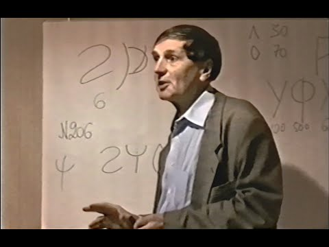
№ 0661:30:34А. А. Зализняк История русского ударения 2016 2017 гг Аудиозапись лекции 7 22102016
-
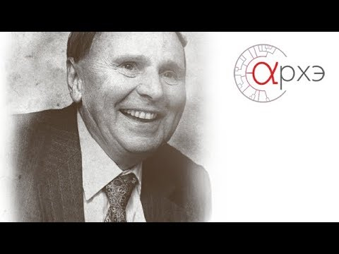
№ 0671:26:41А. А. Зализняк История русского ударения 2016 2017 гг Лекция 10 12112016
-
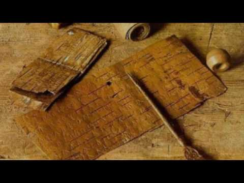
№ 0681:26:50А. А. Зализняк История русского ударения 2016 2017 гг Лекция 12 26112016
-
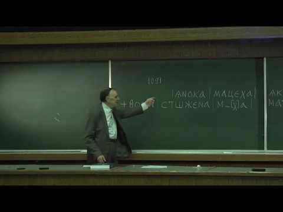
№ 0691:31:29А. А. Зализняк История русского ударения 2016 2017 гг Лекция 13 03122016
-
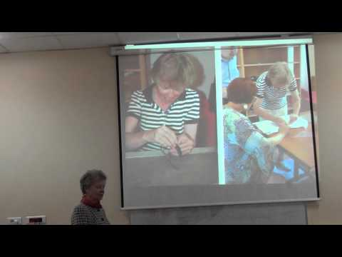
№ 0701:20:57А. А. Зализняк История русского ударения 2016 2017 гг Лекция 14 10122016
-
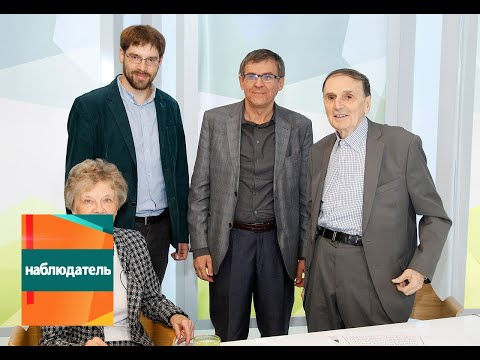
№ 0711:06:38А. А. Зализняк История русского ударения 2016 2017 гг Лекция 15 17122016
-
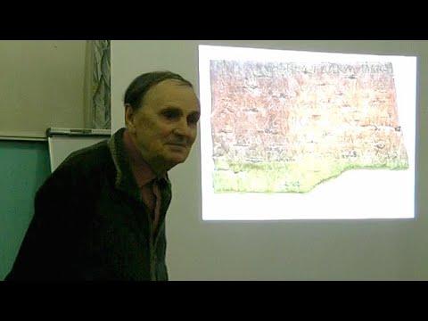
№ 0721:26:44А. А. Зализняк История русского ударения 2016 2017 гг Лекция 16 11022017
-
№ 0731:23:04
А. А. Зализняк История русского ударения 2016 2017 гг Лекция 17 18022017
-
№ 0741:33:28
А. А. Зализняк История русского ударения 2016 2017 гг Лекция 19 04032017
-
№ 0751:29:19
А. А. Зализняк История русского ударения 2016 2017 гг Лекция 2 17092016
-
№ 0761:29:18
А. А. Зализняк История русского ударения 2016 2017 гг Лекция 20 11032017
-
№ 0771:25:54
А. А. Зализняк История русского ударения 2016 2017 гг Лекция 21 18032017
-
№ 0781:28:20
А. А. Зализняк История русского ударения 2016 2017 гг Лекция 22 25032017
-
№ 0791:19:45
А. А. Зализняк История русского ударения 2016 2017 гг Лекция 23 01042017
-
№ 0801:29:10
А. А. Зализняк История русского ударения 2016 2017 гг Лекция 24 24042017
-
№ 0811:24:33
А. А. Зализняк История русского ударения 2016 2017 гг Лекция 25 29042017
-
№ 0821:24:56
А. А. Зализняк История русского ударения 2016 2017 гг Лекция 27 13052017
-
№ 0831:23:36
А. А. Зализняк История русского ударения 2016 2017 гг Лекция 3 24092016
-
№ 0841:26:40
А. А. Зализняк История русского ударения 2016 2017 гг Лекция 4 01102016
-
№ 0851:28:58
А. А. Зализняк История русского ударения 2016 2017 гг Лекция 5 08102016
-
№ 0861:30:39
А. А. Зализняк История русского ударения 2016 2017 гг Лекция 8 29102016
-
№ 0871:33:51
А. А. Зализняк История русского ударения 2016 2017 гг Лекция 9 05112016
-
№ 0881:25:29
А. А. Зализняк История русского ударения 2017 г Аудиозапись лекции 2 23092017
-
№ 0891:22:53
А. А. Зализняк История русского ударения 2017 г Лекция 1 16092017
-
№ 0901:22:32
А. А. Зализняк История русского ударения 2017 г Лекция 10 18112017
-
№ 0911:27:29
А. А. Зализняк История русского ударения 2017 г Лекция 11 25112017
-
№ 0921:27:30
А. А. Зализняк История русского ударения 2017 г Лекция 12 02122017
-
№ 0931:31:35
А. А. Зализняк История русского ударения 2017 г Лекция 13 09122017
-
№ 0941:05:29
А. А. Зализняк История русского ударения 2017 г Лекция 14 последняя 16122017
-
№ 0951:18:27
А. А. Зализняк История русского ударения 2017 г Лекция 3 30092017
-
№ 0961:26:23
А. А. Зализняк История русского ударения 2017 г Лекция 4 07102017
-
№ 0971:29:46
А. А. Зализняк История русского ударения 2017 г Лекция 5 14102017
-
№ 0981:28:22
А. А. Зализняк История русского ударения 2017 г Лекция 6 21102017
-
№ 0991:28:40
А. А. Зализняк История русского ударения 2017 г Лекция 7 28102017
-
№ 1001:29:34
А. А. Зализняк История русского ударения 2017 г Лекция 8 06112017
-
№ 1011:20:05
А. А. Зализняк История русского ударения 2017 г Лекция 9 11112017
-
№ 1025:04
А. А. Зализняк Начало лекции 11 декабря 2010 г МГУ
-
№ 1034:32
А. А. Зализняк Начало лекции по санскриту 18 декабря 2010 г
-
№ 1041:25:06
А. А. Зализняк Строй ведийского языка 2015 2016 гг Лекция 10 21112015
-
№ 1051:19:40
А. А. Зализняк Строй ведийского языка 2015 2016 гг Лекция 11 28112015
-
№ 1061:29:47
А. А. Зализняк Строй ведийского языка 2015 2016 гг Лекция 12 05122015
-
 № 1071:25:29
№ 1071:25:29А. А. Зализняк Строй ведийского языка 2015 2016 гг Лекция 13 12122015
-
№ 1081:31:24
А. А. Зализняк Строй ведийского языка 2015 2016 гг Лекция 13 30042016
-
№ 1091:17:54
А. А. Зализняк Строй ведийского языка 2015 2016 гг Лекция 14 19122015
-
№ 1101:05:19
А. А. Зализняк Строй ведийского языка 2015 2016 гг Лекция 15 13022016
-
№ 1111:25:42
А. А. Зализняк Строй ведийского языка 2015 2016 гг Лекция 16 22022016
-
№ 1121:23:59
А. А. Зализняк Строй ведийского языка 2015 2016 гг Лекция 17 27022016
-
№ 1131:25:57
А. А. Зализняк Строй ведийского языка 2015 2016 гг Лекция 18 05032016
-
№ 1141:24:06
А. А. Зализняк Строй ведийского языка 2015 2016 гг Лекция 20 19032016
-
№ 1151:19:03
А. А. Зализняк Строй ведийского языка 2015 2016 гг Лекция 22 230416
-
№ 1161:22:02
А. А. Зализняк Строй ведийского языка 2015 2016 гг Лекция 3 260915
-
№ 1171:16:42
А. А. Зализняк Строй ведийского языка 2015 2016 гг Лекция 6 17102015
-
№ 1181:26:32
А. А. Зализняк Строй ведийского языка 2015 2016 гг Лекция 7 311015
-
№ 1191:20:52
А. А. Зализняк Строй ведийского языка 2015 2016 гг Лекция 8 07112015
-
№ 1201:15:25
А. А. Зализняк Строй ведийского языка 2015 2016 гг Лекция 9 13112015
-
 № 1211:59:03
№ 1211:59:03А. А. Зализняк. 1-я лекция в Падуе (Италия), 07.04.2008
-
 № 1221:53:07
№ 1221:53:07А. А. Зализняк. 2-я лекция в Падуе (Италия), 08.04.2008
-
№ 1232:03:33
А. А. Зализняк. 3-я лекция в Падуе (Италия), 09.04.2008
-
№ 1244:26
Академик А. А. Зализняк о санскритском корне jR
-
№ 1251:28:44
Грамматический строй санскрита 2014 2015 гг Лекция 2 20 сентября 2014 г
-
№ 1261:27:02
Грамматический строй санскрита 2014 2015 гг Лекция 4 04102014
-
№ 1271:44:07
Грамматический строй санскрита 2014 2015 гг Лекция 5 11 10 2014
-
№ 1280:03
Перед лекцией академика А. А. Зализняка Октябрь 2017 г ГЗ МГУ
-
№ 1292:37:59
А.А.Зализняк беседует с В.А.Успенским. Часть 1, 28.06.2010
-
№ 1301:16:08
Грамматический строй санскрита. 2014-2015 гг. Лекция 6. 18 октября 2014 г.
-
№ 1312:12:21
А.А. Зализняк. О берестяных грамотах из раскопок 2010 г., лекция 2
-
 № 1322:43:27
№ 1322:43:27Andrei Zaliznyak lecture 01 Oct 2015
-
№ 13320:39
21.07.2010, Новгород, берестяная грамота № 1000
-
№ 1344:37
Igor Melchuk to Andrey Zaliznyak birthday
-
 № 13510:51
№ 13510:51zaliznyak answers 261012
-
№ 1361:12:04
А.А. Гиппиус. Берестяные грамоты как живая речь
-
№ 1372:02:22
А.А. Гиппиус. О берестяных грамотах из раскопок сезона 2019 года
-
№ 1381:03:11
А.А. Зализняк. Берестяные грамоты сезона 2014
-
№ 1392:15:23
А.А. Зализняк. Ещё раз о жизни слов
-
№ 1401:40:03
А.А. Зализняк. Живые механизмы современного русского ударения
-
№ 1412:25:03
А.А. Зализняк. О берестяных грамотах из раскопок сезона 2014 года
-
№ 1422:40:35
А.А. Зализняк. О берестяных грамотах из раскопок сезона 2015 года
-
№ 1431:59:05
А.А. Зализняк. О берестяных грамотах из раскопок сезона 2016 года. Лекция 1
-
№ 1447:56
А.А.Зализняк в 1995 году, 60-летие Е.В.Падучевой, застолье
-
№ 14547:59
А.А.Зализняк Или и Уже (2017) ч.1
-
№ 14641:15
А.А.Зализняк Или и Уже (2017) ч.2
-
№ 1471:04:36
А.А.Зализняк о находках Новгородской экспедиции, август 2014
-
№ 1483:50
А.А.Зализняк получает Госпремию, 12.06.2008
-
№ 1492:17
А.А.Зализняк читает берестяную грамоту. Новгород, 2016
-
№ 1501:26
Андрей Зализняк
-
№ 15114:13
Андрей Зализняк Истина сушествует Солженицынская речь
-
№ 1524:56
Андрей Зализняк лингвист с абсолютной репутацией
-
№ 1536:53
Андрей Зализняк ЧТО ТАКОЕ РУСЬ
-
 № 1546:05
№ 1546:05Андрей Зализняк_ Между прошлым и будущим
-
№ 1551:13:48
Андрей Зализняк. Новгородская Русь по берестяным грамотам взгляд из 2012 года
-
№ 1569:57
Андрей Зализняк. Прогулки по Европе
-
№ 1578:42
Андрей_Зализняк__Русский__Украинский__Белорусский
-
№ 1580:48
Вы занимались раньше санскритом..., фрагменты занятия А.А. Зализняка Строем санскрита (3 из 3)
-
№ 15932:08
Доклад А.А. Зализняка, 26 октября 2012 года Andrei Zaliznyak report
-
№ 1602:42
Из моих воспоминаний о А.А.Зализняке
-
№ 1610:50
Исконное ударение в слове «творог». Академик Андрей Зализняк
-
 № 16243:40
№ 16243:40К 20-летию обретения Новгородской псалтыри история открытия, сохранения и изучения
-
№ 1632:14:10
Лекция А.А. Гиппиуса о берестяных грамотах, 30 окт 2018
-
№ 1641:48:03
Лекция А.А.Зализняка (12.2.16)
-
 № 1656:26
№ 1656:26Лекция Какой народ изначально был Русью. Рассказывает Академик РАН Андрей Анатольевич Зализняк
-
№ 1662:10:35
А.А. Зализняк. О берестяных грамотах из раскопок сезона 2008 года
-
№ 1671:23:47
А.А.Зализняк и А.А.Гиппиус о находках Новгородской экспедиции, август 2017
-
№ 16851:28
Новгород Письма из средневековья
-
№ 1691:18:10
А. А. Зализняк. Строй ведийского языка. 2015-2016 гг. Лекция 2. 19.09.2015
-
№ 1701:15:10
Зализняк. Новгородская Русь по берестяным грамотам. 2012
-
№ 1711:46:56
А.А. Зализняк. О берестяных грамотах из раскопок сезона 2012 года. Лекция 2
-
№ 1721:56:39
А.А. Зализняк. О берестяных грамотах из раскопок 2010 г., лекция 1
-
№ 1731:20:52
А.А. Зализняк в МГУ, 07.11.2015
-
№ 1742:40:10
Лекция академика Андрея Зализняка
-
№ 1752:03:11
А.А. Зализняк. О берестяных грамотах из раскопок сезона 2016 года. Лекция 2
Записей с такими параметрами нет.
Измените запрос или сбросьте фильтры.
Измените запрос или сбросьте фильтры.